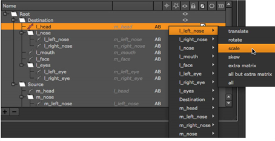

Open topic with navigation
Animating Warps
In the GridWarp and SplineWarp node’s properties panels, there are controls for animating both the source and the destination grids or shapes. Here, we first look at the GridWarp node and then the SplineWarp node. The instructions assume you know how to warp a still image using these nodes (if not, refer to Warping Images Using the GridWarp Node and Warping an Image Using the SplineWarp Node).
To Animate a Warp Using the GridWarp Node
If autokey is enabled, key frames are added every time you adjust the grid. Otherwise, click the add key button  under Source Grid. This saves the current grid as a key shape.
under Source Grid. This saves the current grid as a key shape.
|
2.
|
Move to a new frame and adjust the source grid accordingly. A new key shape is set automatically. |
|
3.
|
Repeat the previous step as necessary. If you need to delete a key shape, scrub to the frame where you set it and click delete key  under Source Grid. under Source Grid. |
|
4.
|
Hide the source grid and display the destination grid. |
|
5.
|
While viewing the output of the GridWarp node, adjust the destination grid until you are happy with the warp. |
If autokey is enabled, key frames are added every time you adjust the grid. Otherwise, click the add key button under Destination Grid. This saves the current grid as a key shape. Click the set button under Destination Grid. The current grid is saved as a key shape.
|
6.
|
Move to a new frame and adjust the destination grid again. The modified grid is automatically set as a key shape. |
|
7.
|
Repeat the previous step until you are happy with the animated warp. |
To Animate a Warp Using the SplineWarp Node
If autokey is enabled, key frames are added every time you adjust a shape. Otherwise, click the add key button with A warped selected. This saves the current shape as a key frame.
|
2.
|
Move to a new frame and adjust the shapes accordingly. New key shapes are set automatically. |
Repeat the previous step as necessary. If you need to delete a key shape, scrub to the frame where you set it and click delete key with A warped selected.
Linking Transforms Using the SplineWarp Node
Transforms applied in the properties panel Transform tab can be expression linked with other shapes in the curves list using the transform linked toggle.
|
1.
|
Create the required transform on the source shape. |
|
2.
|
Click the transform linked toggle in the curves list. |
A menu displays the available shapes and transform types.

You can link all transform types associated with the source shape or be selective, such as all but extra matrix.
|
3.
|
In the example, any scale keyframes added to the l_left_nose shape are applied equally to the l_head shape. |
|
4.
|
If you want to remove a link, click the transform linked toggle for the required shape, select the link, and click remove link. |